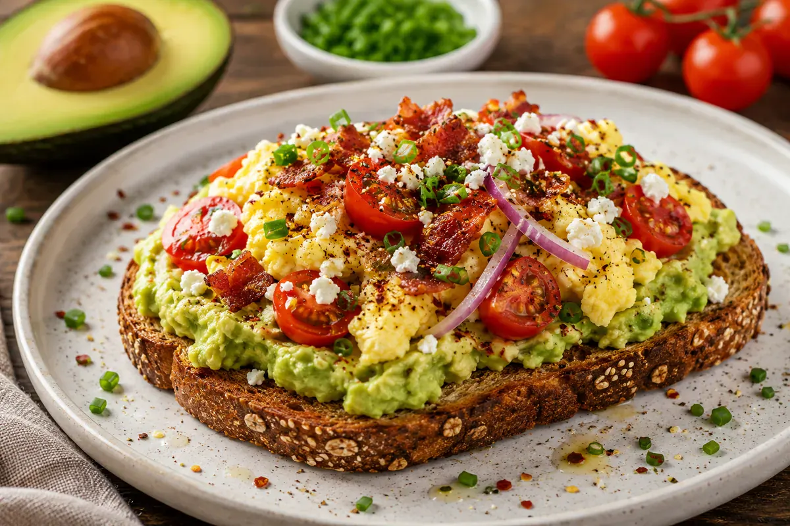

Loaded Avocado Toast

Illustrative image.
This is the maximalist version of avocado toast: thick sourdough, avocado mashed with lemon, a scatter of quartered cherry tomatoes, everything bagel seasoning, olive oil and a pinch of red pepper flakes. It is a five-minute breakfast that eats like a proper meal.
The difference between this and a plain avocado toast is entirely in the toppings, so the texture matters as much as the flavour. Cold tomatoes, crisp toast and a glossy slick of olive oil make it feel deliberate rather than thrown together.
Ingredients
- 2 thick slices of artisanal sourdough bread
- 1 large ripe avocado
- 1 tsp fresh lemon juice
- 1 tbsp Everything Bagel seasoning
- 1/2 cup cherry tomatoes, quartered
- Drizzle of extra virgin olive oil
- Red pepper flakes (optional)
Instructions
- Toast the sourdough bread slices until golden brown and beautifully crisp.
- In a small bowl, mash the avocado flesh together with the lemon juice and a tiny pinch of salt using a fork.
- Spread the seasoned avocado smash evenly across the warm toasted sourdough.
- Top with the quartered cherry tomatoes, scatter Everything Bagel seasoning generously, and finish with a light drizzle of high-quality olive oil.
Why this recipe works
Everything bagel seasoning brings sesame, poppy, garlic, onion and salt in one shake, which saves measuring four separate things. Quartering the tomatoes rather than slicing them keeps them from sliding off, and adding them after the avocado stops the toast going soft.
Tips for success
- Toast the sourdough until it is firm enough to hold the toppings without bending.
- Mash the avocado with lemon and a pinch of salt, then spread it thickly to the edges.
- Add the tomatoes, seasoning and oil at the last moment so the bread stays crisp.
Substitutions that work
- If you do not have everything bagel seasoning, mix sesame seeds, poppy seeds, dried garlic, dried onion and coarse salt.
- Rye or a seeded multigrain loaf gives a nuttier base than sourdough.
- Cottage cheese or ricotta under the avocado adds protein and makes it more filling.
Storage and make-ahead
Assemble and eat immediately. The components can be prepped a few hours ahead: mash the avocado with extra lemon, keep the tomatoes whole and quarter them at serving time. Once assembled, it does not keep.
Serving suggestions
Serve with a poached egg on top for brunch, or alongside a bowl of soup for lunch. It works as part of a brunch board with fruit, cheese and cured meat.
Building it so the toast holds up
The order of the toppings matters as much as the toppings themselves. Spread the avocado first, right to the edges, so the bread is protected from the tomatoes. Add the tomatoes cut side up, season them separately with a pinch of salt, then add the everything bagel seasoning and the oil. If you are making several slices, toast them all first and layer them on a board, then build them one at a time; assembling four slices in advance means the last one is already soft. A warm plate keeps the second serving from going cold while you eat the first.
Frequently asked questions
What is in everything bagel seasoning?
Sesame seeds, poppy seeds, dried garlic, dried onion and coarse salt. It is widely available, but easy to mix at home in equal parts with a little extra salt.
Can I make loaded avocado toast vegan?
Yes. The base is already plant-based; just check that the bread is vegan and skip any cheese or egg toppings.
How do I keep the toast from going soft?
Toast it well, spread the avocado on while the bread is warm, and add the wet toppings such as tomatoes at the very end.